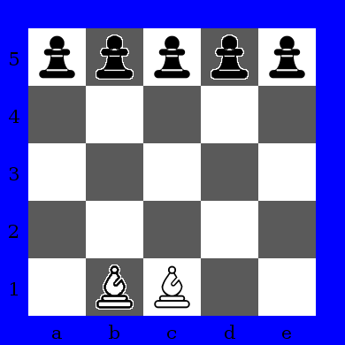
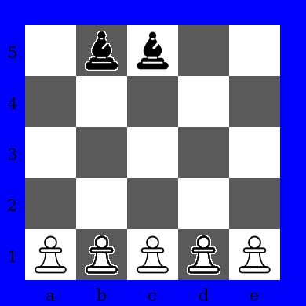
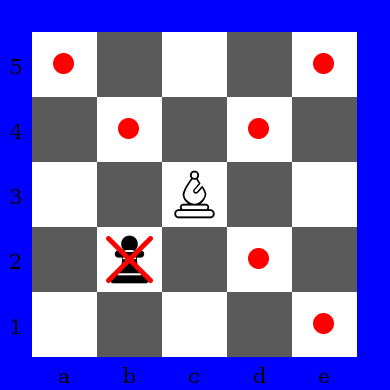
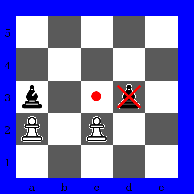

Bishops against pawns is played in 5x5 chessboard, one player has two bishops and another has five pawns. In options at Select Game dialog window you can define which player has bishops. If white player plays with bishops, white bishops starts at "b1" and "c1" squares and black pawns starts at 5th rank. Otherwise, white pawns starts at 1st rank and black bishops starts at "b5" and "c5" squares.

Bishops against Pawns start position. Bishops as white.

Bishops against Pawns start position. Bishops as black.
Bishop can move any number of squares in diagonal, and captures in same way. Bishop can't jump another pieces.

Bishop movement.
Pawn can move only one square in front. If another piece is in front of pawn, this pawn can't move. Pawn captures opponent piece at diagonal.

Pawn movement. Pawn at "a2" can't move, since bishop
at "a3" blocks pawn movement. Pawn at "c2" can move to "c3" or
capture bishop at "d3".
Player with bishops must capture all opponent pawns or block all pawn movements to win. Player with pawns must carry at least one pawn to last rank (5th rank if white pawns or 1st rank if black pawns) and this pawn can't be captured in next opponent move. Player with pawns also win if all opponent bishops are captured.